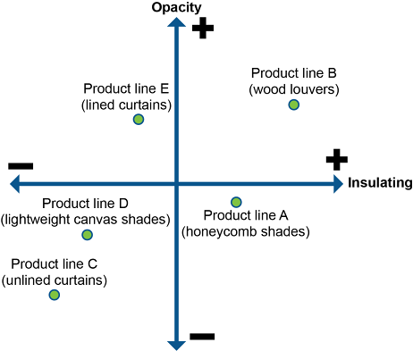

Customer relationship management (CRM) is a philosophy that recognizes that all companies are at least in part service companies and that the quality of that service matters. Segmenting customers helps provide tailored services to different groups. Various methods of segmenting customers and complementary CRM strategies are described here.
📖 ASCM Definition — customer relationship management (CRM):
The definition suggests that CRM starts with an adjustment of philosophy in an organization—the shift to a customer-centric way of doing business—and then moves to a retooling of all the business processes that touch on the relationship with the customer, from customer acquisition to order fulfillment.
CRM's focus on the customer is both broad and deep. It is broad in that it covers every interaction with customers; it is deep in that it focuses on the development of long-term relationships with customers whenever possible. A premise of lifetime customer value is that retaining customers is more profitable than finding new ones. While CRM is often identified with the software of the same name, the focus on long-term customer relationship building is one of the reasons why CRM is a philosophy first and not just a technology solution. While the software provides a repository for customer data to facilitate consistency in service interactions, ongoing communications with customers requires soft skills such as listening, the ability to demonstrate an understanding of the customers' perspectives, and the championing of customer needs to others in the organization.
In his book Business @ the Speed of Thought, Microsoft founder Bill Gates comments that
a manufacturer or retailer that responds to changes in sales in hours instead of weeks is no longer at heart a product company, but a service company that has a product offering.
This statement underscores some key points. First, responding to change quickly has become the differentiator between winners and losers in today's business world. Second, if businesses fail to understand that their prime mission is to satisfy their customers' needs and wants—to provide a product/service package rather than push boxes out the factory door—then those businesses will simply fail. CRM has been adopted as a competitive survival strategy.
By definition, if a firm embraces the philosophies behind CRM, it naturally must elevate customer-centric concepts above other considerations and engage in the difficult tasks of gathering, sharing, and acting on end customer information. Without embracing these supply chain changes wholeheartedly, a supply chain will remain a series of uncooperative and inefficient firms and will likely be bypassed by competitors who have embraced CRM (and other collaboration tools) to become more agile and efficient.
The focus on creating and sustaining more profitable relationships with customers has led organizations to transform themselves into customer-centric organizations.
The focus on creating and sustaining more profitable relationships with customers has led organizations to transform themselves into customer-centric organizations. Customer-centric organizations
Add value to their products or services, integrating products and information so that customers feel more educated during and after the decision-making process
Are innovative not only in their design of services and products but in their marketing, delivery, and customer care (An example may include how customer care strives to improve customer service while reducing costs and provides self-service and support so the customer feels in control.)
Design all business contact points from the customer's perspective
Share detailed insights about customers within the organization or supply chain.
Because different types of customers have different needs, the CRM philosophy requires that organizations segment their customers and engage in customer-focused marketing.
📖 ASCM Definition — customer segmentation:
Potential customers form a very large group that can be segmented based on market analysis and information from existing customers. Segmentation can be based on any number of criteria selected to suit a particular purpose, and each class may be segmented in more than one way. Market segments can be defined by demographic characteristics such as gender, geography, age, occupation, and wealth. Demographic categories can also be refined or customized. For example, geographic segmentation could be based on the likelihood of visiting a particular retail location, by ZIP or area code, or by zones that contain relatively equal demand (i.e., the size of each zone would vary). Customers can also be segmented by attitudes or psychological profiles, such as willingness to engage in social media or self-identification in a social group such as a biker or a wine lover.
During product or service design or redesign, marketing can ask more specific questions about the potential market. As always, the basic questions are the best questions: Who? Where? When? Why? What? How many? In other words, who is interested in the new product, and where are they located? Are they low-income urban apartment dwellers, suburban homeowners, or farmers and ranchers? The answers to such questions constitute segmentation.
When discussing market segments in a supply chain, there may be more than one perspective of who the customer is. For example:
Most organizations now recognize that a successful business strategy is customer-focused. According to the ASCM Supply Chain Dictionary, customer driven (another term for customer-focused) is "a company's consideration of customer wants and desires in deciding what is produced and its quality."
Customer-focused marketing is based on several fundamental concepts:
Customer requirements must drive product and service design. Rather than designing a product or service with multiple varieties in features, colors, and prices, design should start with analysis of actual customer requirements or needs. For example, the results could show that color is irrelevant but a particular design feature is worth a premium.
All products and services have more than one market segment. The primary justification for defining market segments is the marketing assertion that no single set of customer requirements describes all potential customers. Each customer will have unique requirements, but groups of customers with similar requirements can be identified. For example, a furnace repair/replacement service may require that a new heating system be delivered as soon as possible to replace a broken unit, while a home builder may order in bulk and always order with lead time, valuing consistency over fast delivery.
Logistics and marketing strategy must focus on customer segments. In addition to designing the form of a product or service to meet customer requirements, marketing provides marketing information in a manner likely to reach and be appreciated by that segment. Logistics must then make that product or service available to the customer at a time and place the customer segment finds convenient. This often involves developing multiple supply chains tailored to specific customer segments and/or product types.
Profitability is more important than sales volume. All strategic decisions on product form, marketing expense, and logistics (methodology, timing, and placement) have an associated cost. Each additional cost must be justified by incremental (marginal) increases in profits. An essential benefit of customer segmentation is an identification of the size and value of each segment, which can help predict whether a given change in strategy will increase profits. The situation to avoid is a feature or investment that increases revenue but also increases expenses by a similar amount.
What Is Driving the Change to Being Customer-Focused?
Today's customer is harder and more expensive to win and to keep, so businesses need to understand customer segments, improve two-way communications with them, and work to fulfill customer segment needs when it can be done profitably. Advances in technology and competition in a worldwide free marketplace have benefited customers by raising their expectations for quality, trouble-free products and services. For example, today's automobile may be very difficult for an amateur mechanic to repair, but it is also relatively trouble-free compared with the automobile of the 1950s. Car buyers today expect that their vehicles will last at least 10 years and will experience only minor problems for the first six years. Meeting those expectations raises the costs of design and production.
As customers begin to assume that products and services will be of high quality, the competitive differentiator becomes price or value. The internet makes it easy for customers to shop for lowest price. The market expands from the neighborhood retailer to a global marketplace of eager sellers. This creates further pressure on a business's bottom line or profit. One way to respond to this pressure is to "niche market," to develop and market products to specific customer segments that have shown they value and are willing to pay for what this product or service offers. This again raises the costs of doing business, since the business must design profitable but customizable products while it develops and executes multiple marketing plans.
Creating customers for life has become a critical business goal.
The resulting pressure on profit makes it even more important that companies retain their customers, since customers become more profitable the longer they are retained. Creating customers for life has become a critical business goal. Reaching that goal requires understanding and then satisfying customer segment expectations and delivering greater perceived value than the competition.
Words like "niche" and "customization" reflect the fact that customers increasingly expect the market to come to them rather than for them to go to the market. In other words, they expect to have things their way. In a satellite/cable communications world, they expect to find 500 channels, one of which is aimed precisely at their own interests. Runners expect to find a running shoe that exactly matches their own level of exercise, running style, terrain, and anatomy. The marketplace is more segmented every day, which could be seen as a drawback due to its complexity. However, CRM philosophies and technology systems exist to help manage that segmentation.
Segmentation also benefits organizations. Lifetime customer relationships are more likely when customers feel that a business is meeting their unique needs. This is a mutual dependency/mutual gain relationship. Customer-focused businesses have the opportunity to learn more about their individual customers and to use that information to increase sales and profit. Segmentation also helps businesses get a better return on their promotional budgets. Businesses that used to advertise in broadly targeted media sources have decreased or eliminated this form of advertising in favor of more narrowly targeted channels that are less expensive, like special interest magazines or internet or phone app ads. Businesses can be more confident that they are reaching the right audience with the message that is most meaningful to that audience.
The concept of segmentation has existed for some time, but the ways to segment markets have been evolving under customer-focused strategies.
Historically, market segments were based, in the worst case, on preconceptions about the behaviors or desires of certain groups or, in the best case, on research into small "representative" groups of customers. Household cleaning products, for example, were aimed at women and emphasized effectiveness and convenience. Clothing retailers aimed at price niches: inexpensive, moderate, designer. Entertainment producers aimed at age groups: children, adolescents, adults. This type of predictive segmentation can be inaccurate. For example, a large financial institution stereotyped young customers as being more interested in using the internet to fulfill their banking needs, and they directed most of their promotional efforts for online banking to this group. In fact, customers over age 50 (who tended to have more assets and were therefore more valuable to the bank) were increasingly turning to internet banking. The bank was missing a more valuable market segment.
Today, segments can be defined by customers' actual buying behaviors, and the result is more accurate segmentation.
Today, segments can be defined by customers' actual buying behaviors, and the result is more accurate segmentation. Customers for household cleaning products might be divided by a variety of factors other than effectiveness and convenience: customers who want ecologically oriented products, who need products free of scents and dyes, or who want to buy all of their products at the same time from a distributor who can offer savings or rewards. Clothing retailers have subdivided the youth market into four or five segments, each with its own buying habits and preferences.
Segmentation may occur in a customer-focused strategy by customer value to the business, by customer needs, and by preferred contact channel.
Customer value can be defined as the actual or potential profit the organization can make by acquiring and retaining a given customer or customer type over the lifetime of the relationship. In the past, organizations treated customers as if they were all the same. Each received the same level of service and was charged the same fees for the products they purchased, regardless of how they affected the organization's profit. Today more and more organizations are treating customers differently based on the differences in the customers' contributions to the bottom line.
A large computer manufacturer, for example, does not treat all customers equally. Their database tells them who their largest customers are and how much profit they represent. The greater the customer's value, the better the treatment the customer receives. For example, someone who buys multiple servers is more likely to be offered special package pricing or be sent a postcard thanking the customer for their business. The computer manufacturer may decline to offer discounts to smaller businesses that don't generate the profit opportunities that larger businesses do.
Leading-edge organizations are working to increase value generation from high-yield customers. They aim to acquire and retain profitable customers and get them to spend more. Exhibit 6-1 applies the Pareto principle to customer segments, showing how a small number of customers (about 20 percent) can generate a disproportionately large amount of total revenue (about 80 percent). Top tiers get more/better services.

Segmentation by customer needs revolves around the services or product features that profitable customers desire. These needs may refer to specific product or service features, contact channels, or logistics channels (time and placement).
Defining what customers value can use customer-focused segmentation to analyze actual buying behaviors as well as information on the things customers are searching for, such as an entry into a search engine. When purchasing a product, most customers will search for the best value, but value does not equal price for all customer segments. Customers may perceive some purchases as commodities, and for those items they will seek the lowest price. Other items or services may be perceived as more critical. For these buying decisions, other factors, such as reliability, longevity, or the convenience of the purchasing and postpurchase experiences, may be as or more important than price. It is important for businesses, therefore, to understand what the customers want, why, and how much. This is called a value profile. Once the value profile has been created, a value proposition can then be drafted that details how each segment's perception of value will be fulfilled by the product or service. The value proposition is a key part of the promotional strategy and customer relationship.
For example, customers value something more than economy when they choose to shop in a retail environment for items they could obtain over the internet at a lower price. It may be the sensory experience of seeing and touching the product or of the retail store itself. The internet may offer too many choices for some. It may be the personal service received in the retail environment and the relationships formed with sales or service staff. It may be that they don't trust the internet; they may have been disappointed in the quality of products or services they have received or they may be doubtful of the security of online financial transactions. These are the kinds of values that must be identified for the targeted segments and addressed in the customer-focused strategy, often in the form of segment-specific supply chains.
Over the past few years, technology has given customers more options and better service and has lowered the costs of doing business for organizations. Customers are increasingly comfortable making purchases or obtaining service without a "live" customer service representative and may prefer that contact point, or channel, for specific types of purchases or services. Organizations may allow customers to shop online, track order progress, and view account histories. Customers may use websites to obtain installation instructions or documentation. They may value and act on informational or promotional emails.
Because of potential savings, some business sectors have chosen to reward customers that use less expensive technology channels, such as a discount for setting up automated bill payment and paperless billing. Another option is to educate customers on the benefits of a particular channel. For example, automated call-answering systems usually refer callers to chat services or websites for faster service and a chance to avoid a lengthy wait in a phone queue.
To develop customer segments, one must first understand the wants and needs of individuals in terms of, for example, value or preferred contact channels, and then look for patterns that can become the basis for the segments. Customer information is the basis for customer segmentation and all marketing and sales strategies based on an understanding of the wants and needs of those segments. Acquiring this information involves information from multiple sources, including market research and the voice of the customer.
Market intelligence can be purchased from outside sources but can also be derived from data gathered in every customer transaction. Different sources can provide different elements of the complete picture of each customer segment:
can show purchase frequency and volume, information on customer complaints and feedback, and how purchases are financed by the customer segment.
can relay information about what various customer segments are asking for, what they're not interested in, what concerns they have in making the purchase, and why they may or may not be considering the competition. In the business-to-business world, sales representatives hold the key to educating the organization about the customer's business and its unique needs. (Each business client may be its own segment.)
can provide information about how products or services are being used currently and how specific customer segments would like to use them. Their experiences can help gauge segment attitudes toward the company and its products and how well it is managing customer service.
(e.g., retailers, the internet, or self-serve kiosks) can provide information about customer segment values, purchasing habits, and preferences—information that can be valuable in understanding the values of customers in different contact channel segments.
from survey companies, database marketing companies, and service or finance bureaus can provide general customer information.
📖 ASCM Definition — voice of the customer (VoC):
In a broader context, the voice of the customer is a research and measurement tool used in complex selling situations when it may not be easy to ask the right questions. It can be used to understand why a customer has chosen a business or has chosen to leave a business. It can be used to gauge satisfaction with after-sales service, order processing, billing, or delivery or to design new products or services. VOC can help in developing solutions to problems with existing products or services; it can assist in continual improvement. It may be a response to a particular situation, but it is better used in a continual fashion as a way of keeping in touch with customers and their perceptions of the value they are receiving.
VOC allows customers to talk freely and identify topics for discussion rather than simply respond to topics chosen by the researcher. It may help businesses uncover previously unstated customer expectations or needs. The voice of the customer can be captured in a variety of ways: through direct discussion or interviews with individual customers; surveys and focus groups; customer-developed specifications or customer design groups; and collation of customer comments from warranty records, field reports, or complaint logs. This information can be collated by customer segment to help understand each segment's wants and needs. Author Jim Barnes states
A Voice of the Customer (VOC) initiative should give voice to things that the firm would not normally hear. It should allow a firm to hear, straight from its customers, insightful things that do not surface through conventional marketing research.
By continually uncovering and responding to customer needs, organizations using VOC know their customers intimately. They are more able to anticipate desired products and services. They also demonstrate the customer segment focus that differentiates them from their competition.
Creating a CRM strategy involves translating an organization's overall strategic goals and business plans into customer-centric selections in the four Ps of product, price, placement, and promotion for each product family or product. A very important element of CRM strategy is pricing. It is a strategic and critical decision that is often an order qualifier. Placement or channel strategy and segmentation are also important in terms of impact on the perceived value of an offer to a customer. In other words, the price must be right, and, if it is, the right customer segments must be made the offer and it must be conveyed in a manner that will be most likely to get and keep their attention. The marketing, branding, and advertising aspects of CRM promotional strategy and product design are also important.
However, there is a key element in a CRM strategy that must not be forgotten: the customer. A CRM strategy must factor in the customer segments being targeted, possibly leading to a different strategy for each of the organization's targeted customer segments. CRM strategy also needs to consider customer type, which refers to the customer's current relationship with the organization (e.g., prospects, win-back customers).
Customer segment strategies can be categorized by demographics, attitudes, or psychological profiles; as customer value, service-minded customer, retail customer, or B2B customer strategies; and as strategies for reaching customers via technology channels.
When segmentation is performed based on demographics, attitudes, or psychological profiles, care must be taken not to make assumptions but to base the strategies on valid research. Some obvious demographic segmentation strategies can be valuable, such as for products designed only for women, but when it comes to more nuanced segmentation, published scientific studies, census information, or broad-based market research from respected sources should be sought to support intuitive opinions. For example, while traditional marketing wisdom states that repetitive marketing is necessary and effective in getting a brand message to sink in, a study from Exact Target and CoTweet listed on www.marketingcharts.com indicates some contrary research: 52 percent of Twitter users state that messages that are too repetitive or boring are a reason to stop following a brand on that messaging and networking site.
Customer value strategies. To retain the most profitable customers and increase business with high-value customers, businesses must develop customer-centric strategies that accomplish the following.
Define "valuable" customers. Value may mean different things for different organizations, depending on their business goals. A business trying to establish dominance in a market may focus on customers it has converted from the competition. Volume may be meaningful to some businesses, while profit (perhaps subdivided into profitability in targeted products or lines) is meaningful to all for-profit organizations.
Deliver timely, detailed information that will help the organizations identify the most valuable customers. CRM information systems must capture and yield the right information for analysis.
Define what features or services mean the most to the best customer segments. Data may be analyzed to identify the most commonly used or requested features or services. For example, an examination of interactions with the most profitable customers for an online merchant may uncover that they tend to choose the most rapid form of shipping. The merchant might form a closer relationship with these profitable customers by offering free express shipping for larger orders.
Measure impact. Are we dealing with customers without measuring the effectiveness of the segmented customer-centric strategy? Are the costs of providing improved service to customers more than balanced by increased profit or growth? Is there any value to a segmented strategy?
Service-minded customer strategies. For many customers who value service, the call center is the heart of the business with which they are dealing. While most organizations pride themselves on personalized service via the call center, the point of differentiation is often technology. Technology makes information available to the call center operator, who can then use this information to assist the individual customer and resolve issues in a timely fashion. CRM technology allows a customer service representative to view detailed information about the customer's history as well as the specific transaction during the call. A representative can see immediately if this is a high-value customer and escalate the service process (for example, by not placing the person on hold). The representative can demonstrate a high level of personal knowledge about the customer and the customer's business that is valued by the service-minded customer.
Retail customer strategies. Retail customers surveyed by a marketing research company reported that price was not the sole factor affecting their decision to purchase a product. Rather, customers actually were most influenced by the bundle of services surrounding the product, including in-store assistance, the availability of a website or toll-free number for preshopping research or postpurchase customer service, and product design that values easy assembly of the product and integration of the product into existing systems. The second issue driving retail customers was product quality. Price, as measured by both actual price and anticipated product life, ranked in third place. Customer-centric strategies for retail customers should therefore consider and reflect this group's complex contact channel preferences.
B2B customer strategies. Business-to-business (B2B) customers (to be distinguished from customers buying products or services for personal use, or B2C) have specific areas of expectations from the companies with which they do business.
Complementary core competencies. Business customers want to focus their main resources on their own core competencies while turning over the balance of functions to businesses with expertise in those areas. They rely heavily on the expertise and reliability of their product or service providers, because a failure by the provider puts the business customer at risk with its own customers.
Knowledge of the customer's business requirements. Business customers value a provider's understanding of how their business operates, what its limitations and concerns are, how the product or service fits into their business, and what requirements may be part of the purchasing process. Business customers would rather not educate or re-educate each provider. For example, a manufacturing company's supplier should have full online service and specification information for the manufacturer's related products.
Continuous improvement. Business customers value suggestions regarding economic opportunities, improvements, and potential solutions to problems.
These business customer expectations suggest that a successful customer-centric B2B strategy must include extensive training of sales and service representatives, with great attention paid to profiling customer and end user needs, avoiding problems or remedying them quickly, and analyzing account data periodically to identify areas for improvement.
When developing a customer-centric strategy for reaching customers via technological channels, businesses must carefully test how receptive their customers are to the given contact point. Is this the type of purchase they feel comfortable making on their own? Is this a high-relationship, high-touch type of sale? How familiar is the targeted customer segment with the channel? How willing are they to learn? Some B2B systems may require extensive training. Will the decision to use a more technologically advanced channel drive some customers away? Will multiple channels be needed?
Just as products have a life cycle, so do customers. They progress in their relationship with a brand or a business from prospect to customer, and then, at critical decision points, they consider whether to continue or re-initiate the relationship. One of the key purposes of a CRM strategy is to allow an organization to address the various types of prospects and customers it serves at different stages in their particular life cycle. Very different marketing and customer care campaigns are developed based on these types of customer relationships.
The four relationship types are prospective, vulnerable, win-back, and loyal customers.
Potential customers are included in the prospective type. CRM strategy related to prospective customers determines the market research, product pricing, audience segmentation, promotional message, and contact channel that should be selected for each customer segment. Captured data can help shape future prospecting activities. For example, a financial services company may discover that contact with prospects from carefully researched sources yields more new customers than traditional cold-calling over the telephone, while referrals from current customers are the best source
Some customers may be vulnerable; for some reason, the likelihood of retaining their business is less than for other groups. Saving a customer who is about to discontinue service or stop purchasing product requires good target identification and prompt action. CRM data can be instrumental in early and accurate identification of vulnerable customers and in analyzing the most effective retention programs.
According to the of the ASCM Supply Chain Dictionary, churn is "the process of customers changing their buying preferences because they find better and/or cheaper products and services elsewhere." The predictive churn model uses customer information (including factors such as demographics and individual customer purchasing history and trends) to anticipate in what groups and at what levels customer attrition may occur. The model may also be used to measure annual turnover in the customer base and set goals for replacing lost customers through acquisition of new customers.
The business may then decide to target special promotions to keep those customers they believe still have value. For example, credit card companies identify customers who have used their cards only minimally and offer them opportunities to transfer balances from other cards at no interest for a set period. Or they may institute a "frequent user" reward program. Service companies such as phone and cable companies who have a very low marginal cost for customers will often offer special deals to customers who want to cancel (e.g., 50 percent off for the next six months).
Customers may become ex-customers and good ones need to be won back. To win back a customer, communication should be made as soon as possible, within the first week after the customer has discontinued service. Rapid communication between different parts of the company is essential. For example, a phone company discovered that it had lost 27 percent of its mobile phone customers to other mobile providers. They quickly offered a special program to the most valuable customers and were able to win back approximately 50 percent of its profitable customers within 48 hours. (They left the unprofitable customers with the competition.) After additional research, the phone company learned valuable information from the customers who had left the company, such as how the competition enticed them to switch carriers and how perception of the quality of the service had affected that decision. With this new information in hand, the phone company set out to make changes based on the information communicated to them. Contracts may be used to keep customers long enough so they become profitable, but this means that the opportunity to win back customers is often only before a customer signs a competitor's contract.
Automated CRM programs can trigger implementation of win-back programs as soon as the customer relationship is terminated or as it is being terminated. Customer data can support the decision to expend resources to win those customers back.
Other customers become loyal customers, the least vulnerable group and the foundation of successful businesses. The goal of any CRM strategy is to increase the number of loyal customers. It is obviously in the best interests of a business to cultivate customer loyalty. Loyal customers are less vulnerable to loss and will therefore not require the business to incur the costs of a win-back program.
According to a poll published in USA Today, 44 percent of U.S.-based CEOs list customer loyalty as their number-one management challenge. The CRM response to that challenge has been the development of customer loyalty programs—CRM programs that reward loyal customers, in a way meaningful to those customers, for their continued or increased business.
The following are some loyalty program design considerations:
A CRM program may also offer complementary products or services (cross-selling) or more profitable products or services (up-selling). With cross-selling, for example, if you buy a book or music from an online seller, you may automatically be shown a list of products purchased by customers with similar purchasing histories. If you order a part online or through a call center, the system or attendant may offer parts that could be required in the repair. Examples of up-selling include preferential ordering of offerings in an online setting (e.g., prompting purchasers to choose more expensive components by listing them as the default feature) or suggestions by a call center operator to consider the increased benefits of a more expensive service program. For example, during an annual re-enrollment period, a credit card company offers a more expensive account program that has better insurance against credit fraud.
When CRM is used to focus campaigns on the four customer relationship types, it can result in a larger customer base. According to a study by PricewaterhouseCoopers based on independent research, organizational profitability was improved as described below when CRM was used to manage campaigns: